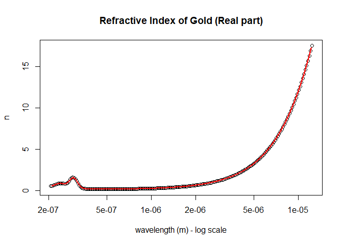

All user-provided wavelengths must be given in meters.
You can install rindex from github with:
# install.packages("devtools")
devtools::install_github("tjconstant/rindex")library(rindex)
rindex.search("silver")
#> pageid DIVIDER BOOK PAGE
#> 3 1 Ag - Silver Ag Johnson
#> 4 2 Ag - Silver Ag Yang
#> 5 3 Ag - Silver Ag McPeak
#> 6 4 Ag - Silver Ag Babar
#> 7 5 Ag - Silver Ag Wu
#> 8 6 Ag - Silver Ag Werner
#> 9 7 Ag - Silver Ag Stahrenberg
#> 10 8 Ag - Silver Ag Windt
#> 11 9 Ag - Silver Ag Hagemann
#> 13 10 Ag - Silver Ag Ciesielski
#> 14 11 Ag - Silver Ag Ciesielski-Ge
#> 15 12 Ag - Silver Ag Ciesielski-Ni
#> 17 13 Ag - Silver Ag Rakic-BB
#> 18 14 Ag - Silver Ag Rakic-LD
#> 19 15 Ag - Silver Ag Werner-DFTRetrieving a dataset is done using the rindex.get() function. You must specify the unique pageid as found in the search table.
rindex.get(pageid = 1)
#> Material: Ag
#> Reference: P. B. Johnson and R. W. Christy. Optical constants of the noble metals, <a href="https://doi.org/10.1103/PhysRevB.6.4370"><i>Phys. Rev. B</i> <b>6</b>, 4370-4379 (1972)</a>
#> wavelength (m) n k
#> 1 1.879e-07 1.07 1.212
#> 2 1.916e-07 1.10 1.232
#> 3 1.953e-07 1.12 1.255
#> [ reached getOption("max.print") -- omitted 46 rows ]You can generate a spline-fit for any dataset using rindex.function(). For example, to get the interpolated refractive index of silver at 633 nm,
Ag <- rindex.function(1)
#> Material: Ag
#> Reference: P. B. Johnson and R. W. Christy. Optical constants of the noble metals, <a href="https://doi.org/10.1103/PhysRevB.6.4370"><i>Phys. Rev. B</i> <b>6</b>, 4370-4379 (1972)</a>
Ag(633e-9)
#> [1] 0.059135+4.28104iA comparison of dataset to spline-function is shown below.
Ag_data <- rindex.get(1)
#> Material: Ag
#> Reference: P. B. Johnson and R. W. Christy. Optical constants of the noble metals, <a href="https://doi.org/10.1103/PhysRevB.6.4370"><i>Phys. Rev. B</i> <b>6</b>, 4370-4379 (1972)</a>
wavelengths <- seq(200,1900,, 100) * 1e-9
plot(Ag_data$wavelength, Ag_data$n,
xlab = "wavelength (m) - log scale",
ylab = "n",
main = "Refractive Index of Silver (Real part)")
lines(wavelengths, Re(Ag(wavelengths)), col = 2, lwd = 2)